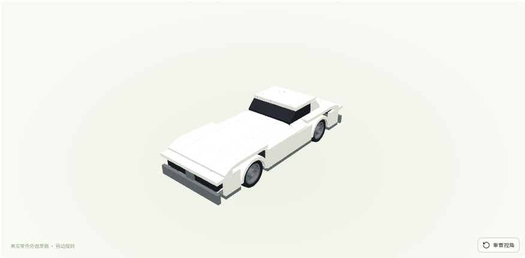
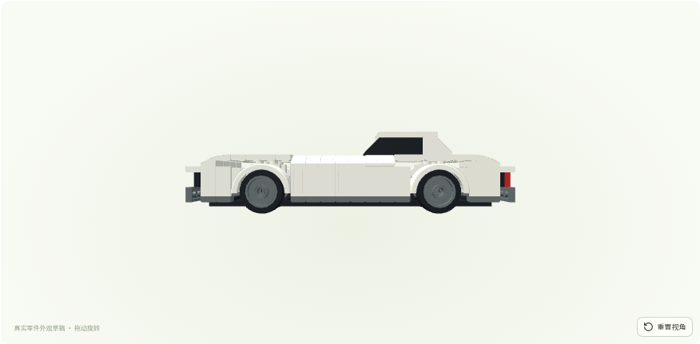
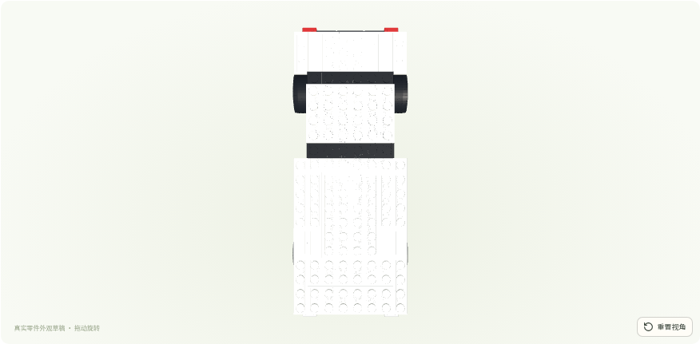
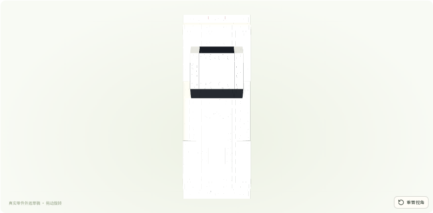

可见改善：机盖平整、曲面收边、连续黑色窗带、独立轮拱和分层双格栅。仍不足：侧面平直、保险杠厚、后窗及后翼子板细节简化；不能宣称完成高还原车型或实物可拼。截图均为本地 WebGL，未发送给外部模型。




基线实际尺寸：424×160×116 LDU；最终：440×160×112 LDU。轴距均240，轮径均60；最终侧窗可见面高24。源几何不缩放、不镜像。
四轮外包络无冲突；非轮组正体积包围盒重叠的10对由原内核检查clear。整车连接/轮组配合/稳定性仍未验证。
第一轮斜侧 · 布局诊断 · 实际模型 · 实际BOM · 覆盖件与权限
最终模型哈希：018d22dbb63be6f3526432addb3c99e16fc9cdccae404d72d42a3851ece65729